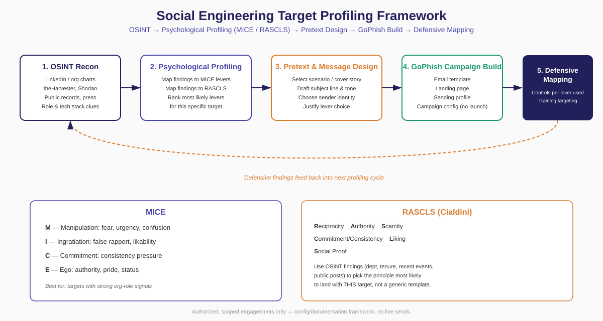

A structured way to run OSINT-driven target profiling before a social engineering engagement — mapping MICE and RASCLS to campaign design in GoPhish, instead of starting from a generic template.

Most phishing simulations skip straight to a template. A real attacker researches the target first, picks the psychological lever most likely to work on that specific person, and only then writes the email. Skipping the research step is why generic simulations underperform real attacks — and why they teach organizations less about their actual risk.
Collect information about the target within authorized scope: role and tenure, organizational structure, technology stack, and any recent public events relevant to the organization.
| Source | What it reveals |
|---|---|
| LinkedIn / org chart | Role, tenure, reporting line, recent changes |
| Company site / press | Org structure, recent initiatives, vendors |
| theHarvester, Shodan | Email format, exposed infrastructure |
| Public records / news | Mergers, layoffs, leadership changes |
Score the target brief against both models and keep only the 1–2 levers that genuinely fit. A campaign built around the wrong lever underperforms even with strong technical execution.
| MICE lever | Fits when... |
|---|---|
| Manipulation | Role carries compliance/deadline pressure |
| Ingratiation | Target has a visible, approachable presence |
| Commitment | Target recently took a public action |
| Ego | Target holds a senior title or recent recognition |
| RASCLS principle | Fits when... |
|---|---|
| Reciprocity | A prior favor can plausibly be referenced |
| Authority | Impersonating IT, legal, or leadership works |
| Scarcity | Role is deadline-driven (finance close, enrollment) |
| Liking | An internal team identity can be mimicked |
| Social Proof | Rollout/adoption framing fits the context |
Translate the chosen lever(s) into a scenario: what the sender claims to be, a subject line that signals the lever directly, a sender identity the target would plausibly trust, and a single clear call to action. Document why the design maps to the Stage 2 lever — that justification is what the exercise is graded on.
Translate the Stage 3 design into GoPhish objects: email template, landing page, sending profile. In a classroom or portfolio context this stage stops at configuration and screenshots — nothing is launched without explicit written authorization.
For every lever used, document the matching technical and organizational control. This is what turns the exercise into a training recommendation specific to the target, rather than a generic phishing-awareness slide.
A fully synthetic walkthrough, included to show the framework's output format rather than real reconnaissance.
| Name | Jane Doe (fictional) |
| Title | Finance Manager, Accounts Payable |
| Organization | FicCorp Industries (fictional) |
| Tenure | 14 months — recently promoted |
| Signal | LinkedIn post on Q3 close; named in a vendor-onboarding press release |
| Model | Lever | Why |
|---|---|---|
| MICE | Ego | Recent promotion + recognition |
| RASCLS | Scarcity + Authority | AP workflow is deadline-driven |
Email appears to come from the CFO's office, referencing the vendor-onboarding initiative she was named in, asking her to confirm updated banking details before a stated cutoff. Subject: "Vendor Banking Update — Confirm Before EOD Friday".
| Lever used | Technical control | Organizational control |
|---|---|---|
| Authority | DMARC/SPF/DKIM enforcement | Banking changes verified by phone, not email |
| Scarcity | Gateway flags urgency language | Targeted AP-staff training |
| Ego | — | Awareness: public recognition raises targeting risk |
This framework sits alongside existing standards rather than replacing them. It operationalizes the Intelligence Gathering and part of the Threat Modeling phases of PTES, specifically for the social engineering vector. Stages 1–2 map to MITRE ATT&CK Reconnaissance (T1589–T1598) and Stage 4 to Initial Access (T1566, Phishing). Stage 5 outputs map to the Protect function of the NIST CSF.